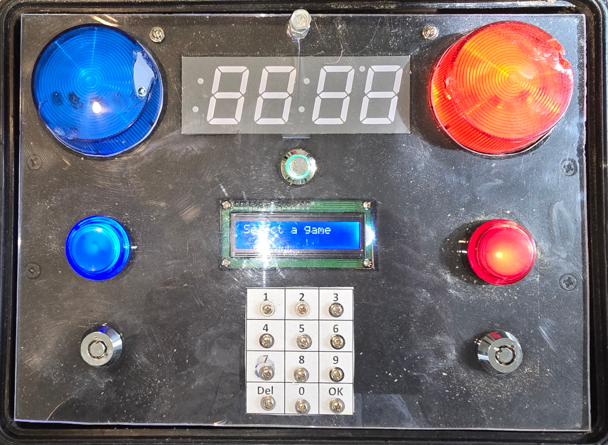

Q-Prop Creations
The Football
This was the first prop I built, a multi-purpose "bomb" prop with the usual array of buttons, lights, displays, and siren. There are selectable game modes, each game is a Python script running on the RaspberryPi Zero which is at the core of the Football. As you will see from the interior diagram, this is not a well made or repeatable prop.
